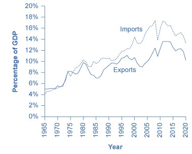
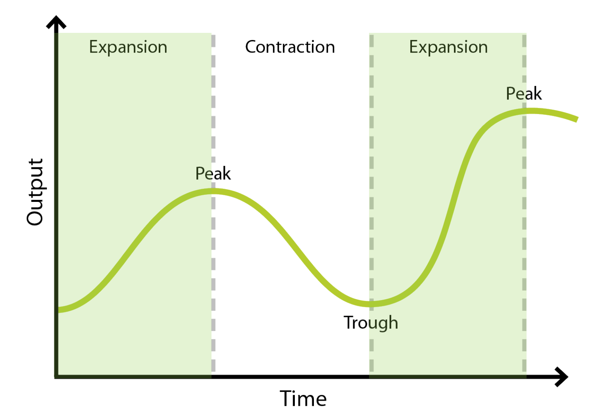

Gross Domestic Product, 2
Measuring GDP
An individual’s total economic activity can be calculated in, at least, two different ways. We can track and add up all of his or her income—wages, interest earned on investments, monetary gifts, rents that are paid to the individual, and so forth. Alternatively, we can track and add up this person’s total expenditures—i.e., goods purchased, services purchased, taxes paid, money invested (or just saved) and so on. As long as we are diligent in our investigations and do the math correctly, we will get the same figure for both calculations.
Somewhat similarly, there are multiple ways of measuring GDP, two of which are (a) adding up everything that is produced or (b) adding up everything that is purchased. We will only examine one, the expenditure approach (or as it is sometimes called the demand side). This method of calculating GDP tracks what is purchased. We can divide this purchasing into four main categories:
consumer spending (referred to as consumption)
business spending (referred to as investment)
government spending on goods and services
and exports minus imports
Consumption expenditures
Consumption expenditures by households is the largest component of GDP, accounting for about two-thirds of the GDP each year. This means that consumers’ spending decisions are a major driver of economic activity.
Investment
When calculating GDP, investment does not mean buying stocks or bonds (which, as we already noted, are not included in GDP). Rather, investment is purchases of new capital goods (e.g., buildings, factories, equipment). Purchases of new residential housing are also included in investment (not in the consumption category). Additions to inventories—that is goods that are produced but not sold in a given quarter or year—are the third main part of investment.
Government expeditures
Government expenditures include spending by all three levels of government—federal, state, and local—on new goods and services. This includes, for example, the federal government buying a new fighter jet for the Air Force, a state government constructing a new highway, or a city government building a new school. Not all government spending is included in GDP, however. Unemployment benefits, veteran’s benefits, and Social Security payments, for instance, are not included because the government does not receive a new good or service in return or exchange for them.
Net exports
The final category is net exports. This is exports minus imports. When calculating GDP, we want to count all production that occurs within a country. As already mentioned, the value of intermediate goods is included in the value of the final good, and so each intermediate good doesn’t need to be tracked. But the exceptions to this are exports and imports. Whether they are intermediate or final goods, a country’s exports are included in its GDP. And whether they are intermediate or final goods, imports into a country are subtracted in that country’s GDP calculation.
Think about an intermediate good that is produced in the United States and then exported to Canada—let’s say the handle that is used to flush a toilet. And let’s also say that Canada produces all of the other parts that are needed to manufacture complete toilets except for the handle. Now, that it has the handles from the United States, it can produce and sell toilets. The value of handle is $8, and the value of the toilet (when it is sold in a store like Lowe’s or Home Depot) is $500.
Even though the handles are an intermediate good, the United States wants to count them in its GDP. So, the handles, like all other exports, are included in the United States’ GDP.
At the same time, the toilet is going to count in Canada’s GDP. It is a final good that was sold in that country. But the value of the handle should not be included in Canada’s GDP (since it was produced in the U.S.). The Canadian government can keep track of how many of these toilets are sold with its tax receipts, but it would be onerous to subtract the $8 from each one.
A much simpler way to proceed is to add up the value of all final goods sold in Canada. So, $500 for each of these toilets plus everything else. And, at the same time, add up the value of all imports and subtract that figure from Canada’s GDP.
The trade balance
When we subtract the value of all imports, we are making sure that this amount is removed from the value of the final goods purchased by consumers, the government, and businesses. But in the GDP calculation, imports are usually subtracted from exports. The figure that we get when we subtract the value of all imports from the value of all exports is the trade balance.
If the value a country’s exports is larger than the value of its imports, then a country has a trade surplus. The United States typically had a trade surplus in the 1960s and 1970s. Since the early 1980s, the value of imports has typically exceeded the value of exports, and so the United States has had a trade deficit in most of the years since then.

The GDP calculation
With these five components, calculating GDP is simply a matter of addition and a little bit of subtraction:
GDP = consumption expenditures (C) + investment (I) + government purchases (G) + exports (X) − imports (M)
Tracking real GDP over time
Figure 3 shows the U.S.’s real GDP since 1947. Although the trend over this period has been increasing GDP, as you can see, short-term declines have regularly interrupted this trend. A significant decline in real GDP is a recession, and an especially lengthy and deep recession is a depression. In figure 3, recessions are represented by the gray shaded areas.
The National Bureau of Economic Research (NBER) makes the official determination of when recessions are occurring (or often, after the fact, when they have occurred). When making a judgement about whether the U.S. is in a recession, the NBER considers a number of factors including changes in real GDP, unemployment, and real incomes. But the unofficial definition of recession that you will often see in the news is “a decline in real GDP over two or more consecutive quarters.”
The high point that GDP reaches before the recession begins is called the peak, and the lowest point of a recession, before a recovery begins, is the trough. Thus, a recession lasts from peak to trough, and an economic expansion runs from trough to peak.

The whole cycle from one peak to the next peak (with a trough between the two) is the business cycle. It is intriguing to notice that the three longest trough-to-peak expansions of the twentieth century have happened since 1960. The most recent recession was caused by the COVID-19 pandemic. This recession started in February 2020 and officially ended in May 2020. This was the most severe recession since the Great Depression in the 1930s, but also the shortest. The previous recession, the Great Recession, was also very severe, and it lasted about 18 months. The expansion that began in June 2009 (at the trough of the Great Recession), however, was the longest on record—lasting 128 months until the pandemic-induced recession began.
Why is GDP important?
In a moment, we will turn to some of the limitations of GDP, but first, let’s examine why this figure is so important. Although it only measures the amount of goods and services produced in a country—the amount of stuff that a country makes—production of goods and services impacts our lives in many ways. Importantly, some of these goods and services are needed for the members of society to have comfortable, safe, and healthy lives. Equally important, producing these goods and services requires workers. Consequently, real GDP is highly correlated with employment and unemployment. When real GDP rises, so does employment.
Conversely, the most significant consequence of a recession is that a slowdown in production means that firms have to lay off some of their workers. Losing a job imposes painful financial and personal costs on workers and often on their extended families as well. And even the workers who keep their jobs during a recession are likely to find that their real wages stagnate or fall.
Per capita GDP
The U.S. has the largest GDP in the world, by a considerable amount. The United States is also a populous country. It is the third largest by population in the world, although it is well behind China and India. Is the United States’ GDP larger than other countries just because the United States has more people than most other countries—and so can produce and consume more goods and services? Or is the United States’ GDP larger because the United States is better at producing goods and services? We can answer this question by calculating the per capita GDP for the United States and comparing it to the same measure for other countries.
Per capita GDP is a measure of the GDP per person for a country. It is found with this equation:
| 2020 real GDP | 2020 population | per capita GDP | |
|---|---|---|---|
| (2015 US$) | (US$) | ||
| United States | 19,294,483,000,000 | 329,484,120 | 58,559.70 |
| China | 14,631,844,420,000 | 1,410,929,360 | 10,370.40 |
| Japan | 4,380,756,530,000 | 125,836,020 | 34,813.20 |
| Germany | 3,434,435,990,000 | 83,240,520 | 41,259.20 |
| India | 2,500,132,190,000 | 1,380,004,390 | 1,811.70 |
| Brazil | 1,749,104,720,000 | 212,559,410 | 8,228.80 |
| Norway | 403,552,920,000 | 5,379,480 | 75,017.20 |
| Denmark | 327,737,530,000 | 5,831,400 | 56,202.20 |
This is not, of course, the average income for all the individuals in each of these countries. (Not all of the value of the production goes to individuals, and every country has a portion of the population that doesn’t work.) It is, however, a useful way of gauging how productive an economy is given the size of the country’s population. And this productivity does correlate with standards of living and median household income.
The limitations of GDP as a measure of the standard of living
“Standard of living” is a broader term than GDP. While GDP focuses on the production of goods and services that are bought and sold in markets, standard of living includes all of the factors that affect people’s well-being, whether they are bought and sold in the market or not. To illuminate the difference between GDP and standard of living, it is useful to spell out some things that GDP does not cover that are clearly important for most people to have happy and comfortable lives.
While GDP includes spending on recreation and travel, it does not cover leisure time. Clearly, however, there is a substantial difference between an economy that is large because people work long hours, and an economy that is just as large because people are more productive with their time, and so they do not have to work as many hours. The GDP per capita of the U.S. economy is larger than the GDP per capita of Germany, but does that mean that the standard of living in the United States is higher? Not necessarily, since it is also true that the average U.S. worker works several hundred hours more per year more than the average German worker. Calculating GDP does not account for the German worker’s extra weeks of vacation.
GDP includes the goods and services that a country puts towards environmental protection, healthcare, and education, but it does not include any actual measure of the state of the environment or of people’s health or how little or much they have learned. GDP doesn’t include information about how clean or dirty the air and water are, whether life expectancy or infant mortality are rising or falling, or the quality of the education that the members of society have received.
GDP also doesn’t distinguish between the production that we want and the production that we don’t want. Rebuilding after a natural disaster or a war counts just the same in the GDP calculation as the normal production of new homes, schools, food, clothing and everything else.
Is GDP misleading?
The fact that GDP per capita does not fully capture the broader idea of standard of living has led to a concern that the increases in GDP over time are misleading. It is theoretically possible that while GDP is rising, standards of living could be falling if human health, the state of the environment, and other factors that are not included in GDP are getting worse. Fortunately, this fear appears to be overstated.
In some ways, the rise in GDP understates the actual rise in the standard of living. For example, the typical work week for a U.S. worker has fallen over the last century from about 60 hours per week to less than 40 hours per week. Life expectancy and health have risen dramatically, and so has the average level of education. Since 1970, the air and water in the United States have generally been getting cleaner. Companies have developed new technologies for entertainment, travel, information, and health. A much wider variety of basic products like food and clothing is available today than several decades ago. Because GDP does not capture leisure, health, a cleaner environment, the possibilities created by new technology, or an increase in the variety of goods and services available, the actual rise in the standard of living for Americans in recent decades may have exceeded the rise in GDP.
At the same time, however, crime rates, traffic congestion levels, and income inequality are higher in the United States now than they were in the 1960s. By ignoring these factors, GDP does tend to overstate the true rise in the standard of living.
GDP is a rough but useful measurement
A high level of GDP should not be the only goal of macroeconomic policy or of government policy more broadly. Even though GDP does not measure the broader standard of living with any precision, it does measure production and it does indicate when a country is better or worse off in terms of jobs and incomes. In most countries, a higher GDP per capita goes hand in hand with other improvements in everyday life.
No single number can capture all the elements of a term as broad as “standard of living.” Nonetheless, GDP per capita is a reasonable, rough-and-ready measure of a country’s standard of living.